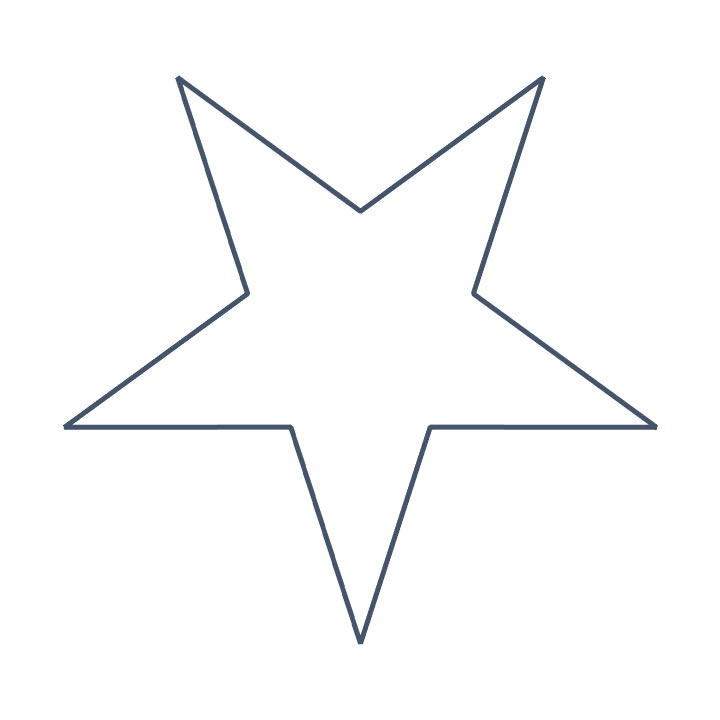
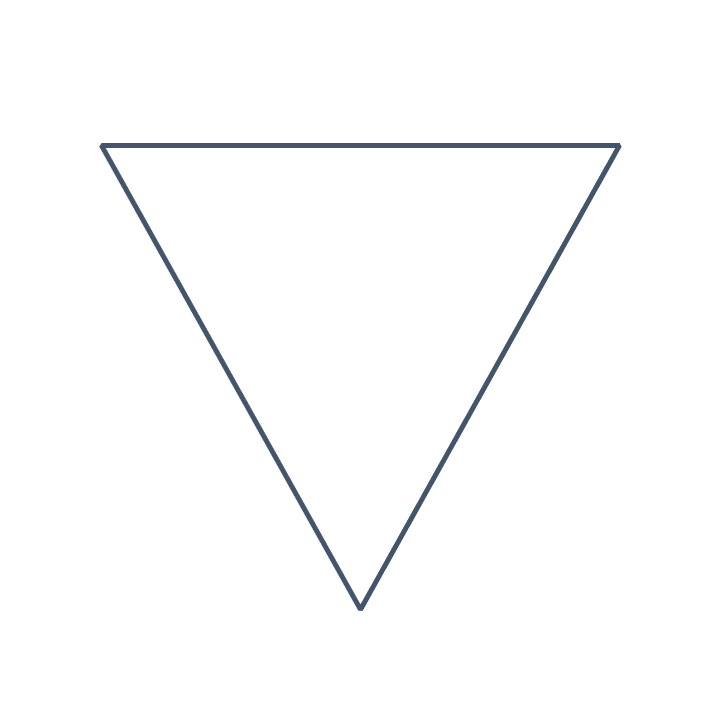
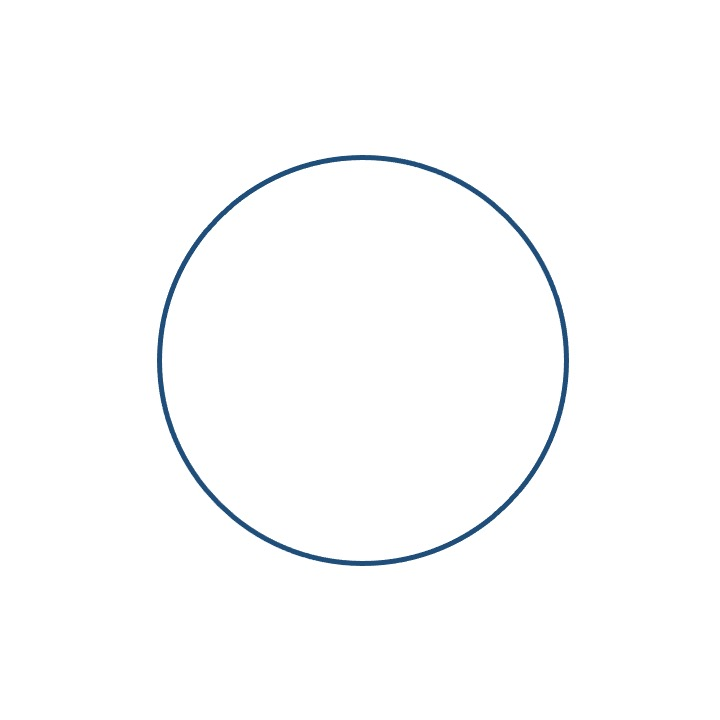

<!DOCTYPE html>
<html>
  <head>
    <title>My experiment</title>
    <script src="https://unpkg.com/jspsych@7.3.4"></script>
    <script src="https://unpkg.com/@jspsych/plugin-html-keyboard-response@1.1.3"></script>
    <script src="https://unpkg.com/@jspsych/plugin-video-keyboard-response@1.1.2"></script>
    <script src="https://unpkg.com/@jspsych/plugin-image-keyboard-response@1.1.3"></script>
    <script src="https://unpkg.com/@jspsych/plugin-html-button-response@1.1.3"></script>
    <script src="https://unpkg.com/@jspsych/plugin-preload@1.1.3"></script>
    <script src="https://unpkg.com/@jspsych/plugin-survey@1.0.1"></script>
    <script src="https://unpkg.com/@jspsych/plugin-survey-text@1.1.2"></script>
    <link rel="stylesheet" href="https://unpkg.com/@jspsych/plugin-survey@1.0.1/css/survey.css"/>
    <link href="https://unpkg.com/jspsych@7.3.4/css/jspsych.css" rel="stylesheet" type="text/css" />
  </head>
  <body></body>
  <script>
  
    /* create timeline */
    var timeline = [];
    
    /* initialize jsPsych, save reaction time and % accuracy to CSV file */
    var jsPsych = initJsPsych({
      on_finish: function () {
      let data = jsPsych.data.get();

      // calculate mean RT and Accuracy
      let mean_rt = data.filter({task: 'response'}).select('rt').mean();
      let accuracy = data.filter({task: 'response'}).select('correct').mean() * 100;

      // add statistics as properties to the dataset
      jsPsych.data.addProperties({
        mean_reaction_time: mean_rt,
        accuracy_percentage: accuracy
      });

      console.log("Saving data to CSV..."); //logging to console for debugging
      jsPsych.data.get().localSave('csv', 'experiment-data.csv');
    }
  });

    /* Preload images and video */
    const preload = {
     type: jsPsychPreload,
     images: ["Stimuli/star.jpeg", "Stimuli/triangle.jpeg", "Stimuli/circle.jpeg"],
     video: ['MindfulnessVideoFinal.mp4']
    };
    timeline.push(preload);

    /* consent */
    var consent = {
    type: jsPsychSurvey,
    survey_json: {
      showQuestionNumbers: false,
      elements:
        [
          {
            type: 'checkbox',
            title: "Welcome to the Study!", 
            name: 'consent', 
            description: "Your participation is solicited, yet strictly voluntary. All information will be kept confidential and your name will not be associated with any research findings. If you agree to participate, please be aware that you are free to withdraw at any point throughout the duration of the experiment without any penalty",
            choices: ['I agree with these conditions.', 'I do not agree with these conditions'], 
            showOtherItem: false,
            showSelectAllItem: false,
            showNoneItem: false,
            required: true,
          }
      ]
    },
          on_finish: function(data) {
        if (data.response.consent.includes('I do not agree with these conditions')) {
          console.log("Participant selected: " + data.response); //logging to console for debugging
          alert("You did not agree to participate. The experiment will now end."); 
          jsPsych.endExperiment("Experiment aborted due to lack of consent."); //participant cannot proceed unless they consent
        } 
      }
    };
    timeline.push(consent);
    
    /* Define the Mindfulness Video Instructions */
    const videoInstructions = {
        type: jsPsychHtmlButtonResponse,
        stimulus: `
        <div style="font-size: 18px; text-align: center;">
          <h1>Meditation Instructions</h1>
          <p>This is a two-step experiment.</p>
          <p>In this first phase, you will listen to a short guided meditation video. Please ensure your device's sound is turned up.</p>
          <p>Please follow the instructions of the video closely, and fully immerse yourself in the meditative task. 
          <p>Please watch the entirety of the video.</p>
          <p> Attention Check: When you are ready to start, please press the 'continue' button.</p>
        </div>`,
        choices: ['Continue', "Proceed"],
        button_html: [
        '<button style="background-color: blue; color: white; font-size: 18px; padding: 10px 20px; border: none; border-radius: 5px;">%choice%</button>',
        '<button style="background-color: red; color: white; font-size: 18px; padding: 10px 20px; border: none; border-radius: 5px;">%choice%</button>'
        ],
        on_finish: function(data) { //This is to make sure that the participant pays attention
          console.log("Participant selected: " + data.response); // Logging to console for debugging
          if (data.response === 1) { //'Proceed' is the second choice (index 1)
            alert("You chose 'Proceed'. Please make sure you are following the experiment instructions.");
            location.reload(); // Reload the page to restart experiment
                }
              }
           };
    
    /* Define the mindfulness video task */
    const videoTask = {
      type: jsPsychVideoKeyboardResponse,
      stimulus: ['MindfulnessVideoFinal.mp4'],
      width: window.innerWidth * 0.98,
      height: window.innerHeight * 1, 
      autoplay: true,
      controls: false,
      choices: "NO_KEYS", // Prevents user input
    
      on_load: function() {
        let videoElement = document.querySelector("video");
        if (videoElement) {
          videoElement.onended = function() {
            console.log("Video ended, proceeding to next task.");
            jsPsych.finishTrial(); // Ensures transition to next trial
          };
        }
      },
    
      on_finish: function() {
        console.log("Video task finished, moving forward.");
      }
    };

      /* Define the Visual Search Task Instructions */
    const visualSearchTaskInstructions = {
        type: jsPsychHtmlButtonResponse,
        stimulus: `
        <h1>Visual Attention Task</h1>
        <p>A shape will appear in the center of the screen.</p>
        <p>If the shape is a <strong>star</strong>, press the letter S on the keyboard as fast as you can.</p>
        <p>If the shape is a <strong>triangle</strong>, press the letter T on the keyboard as fast as you can.</p>
        <p>If the shape is a <strong>circle</strong>, press the letter O on the keyboard as fast as you can.</p>
        
        <div style='display: flex; justify-content: center; gap: 50px; align-items: center;'>
          <div style='text-align: center;'>
            
            <p><strong>Press the S key</strong></p>
          </div>
          <div style='text-align: center;'>
            
            <p><strong>Press the T key</strong></p>
          </div>
          <div style='text-align: center;'>
            
            <p><strong>Press the C key</strong></p>
          </div>
        </div>
      `,
      choices: ['Start Task'],
      button_html: '<button style="background-color: blue; color: white; font-size: 18px; padding: 10px 20px; border: none; border-radius: 5px;">%choice%</button>',
    };
    
    /* Define the visual search task's stimuli */
    var test_stimuli = [];
    for (let i = 0; i < 4; i++) {  // 4 copies of each shape (12 total)
      test_stimuli.push({ stimulus: "Stimuli/star.jpeg", correct_response: 's', stimulus_width: 300 });
      test_stimuli.push({ stimulus: "Stimuli/triangle.jpeg", correct_response: 't', stimulus_width: 300 });
      test_stimuli.push({ stimulus: "Stimuli/circle.jpeg", correct_response: 'o', stimulus_width: 300 });
    }
      test_stimuli = jsPsych.randomization.sampleWithoutReplacement(test_stimuli, 10); // Shuffle and take 10 random items out of the 12 from before

    /* Define the visual search task's fixation and test procedure */
    var fixation = {
      type: jsPsychHtmlKeyboardResponse,
      stimulus: '<div style="font-size:100px;">+</div>',
      choices: "NO_KEYS",
      trial_duration: function(){
        return jsPsych.randomization.sampleWithoutReplacement([5000, 5500, 6000, 6500, 7000, 7500, 8000], 1)[0]; //Long times to facilitate use of sustained attention
      },
      data: {
        task: 'fixation'
      }
    };

    var test = {
      type: jsPsychImageKeyboardResponse,
      stimulus: jsPsych.timelineVariable('stimulus'),
      stimulus_width: jsPsych.timelineVariable('stimulus_width'),
      choices: ['s', 't', 'o'],
      data: {
        task: 'response',
        correct_response: jsPsych.timelineVariable('correct_response')
      },
      on_finish: function(data){
        data.correct = jsPsych.pluginAPI.compareKeys(data.response, data.correct_response);
        data.rt = data.rt; // RT is saved per trial
      }
    };
        
    /* Define visual search task (combine everything) */
     
    var visualSearchTask = {
      timeline: [fixation, test],
      timeline_variables: test_stimuli, // Select 10
      repetitions: 1,
      randomize_order: true
    };
    
    /* Define thank you screen */
     var thankyou = {
      type: jsPsychHtmlKeyboardResponse,
      stimulus: "Thank you for participating in this study. Press any key to end the experiment."
    };
    
    /* Assign a condition to a participant */
    const condition = Math.random() < 0.5 ? 'video_first' : 'visual_search_only';

    if (condition === 'video_first') {
      timeline.push(videoInstructions); // Video-specific instructions
      timeline.push(videoTask);
      timeline.push(visualSearchTaskInstructions);
      timeline.push(visualSearchTask);
      timeline.push(thankyou);// Video task
    } else {
      timeline.push(visualSearchTaskInstructions);
      timeline.push(visualSearchTask);
      timeline.push(thankyou);
    }
         /* start the experiment */
    jsPsych.run(timeline);
  
  </script>
</html>